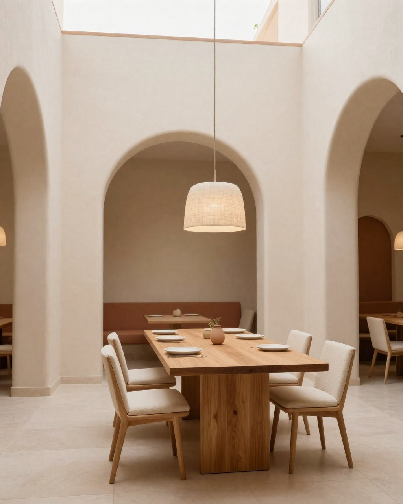

01
Restaurante
Cocina de mercado sin aspavientos. Carta corta que cambia con lo que da la temporada, brasa y fuego lento, y una sala pensada para quedarse un rato más de lo previsto.
restaurante.kalytero.site Próximamente